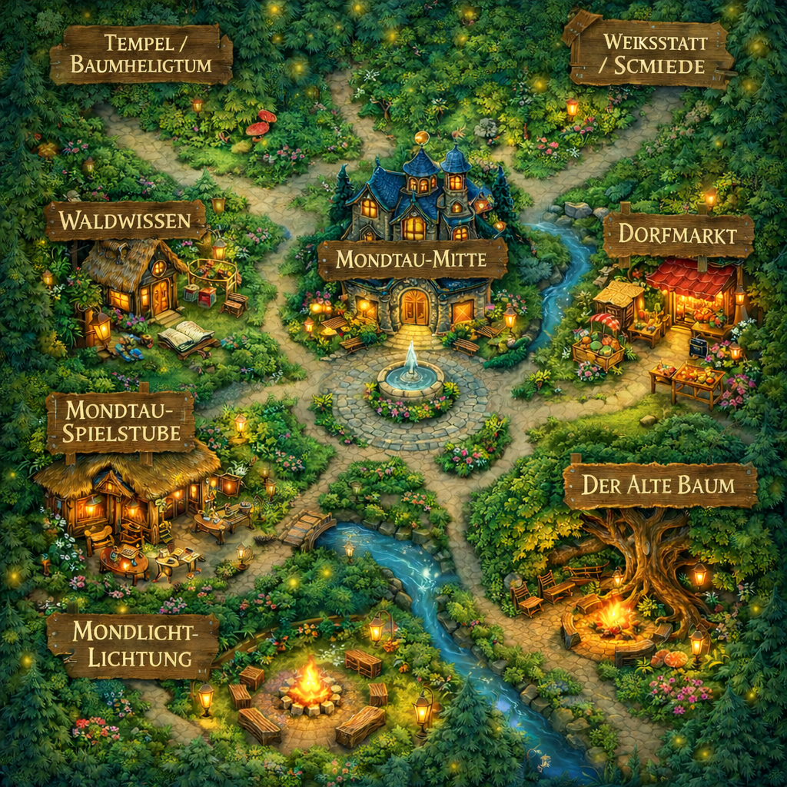

Willkommen im Funkelwalddorf. Bist du bereit, eine Welt voller Märchen und Magie zu betreten? Kannst du noch träumen und Bilder in dir entstehen lassen, die dich in ferne Welten tragen? Dann folge den alten Wegen zwischen Lichtungen, Werkstätten und magischen Orten des Waldes. Halte einen Moment inne und lausche – wie der Mondtau-Bote dir die märchenhafte Geschichte eines kleinen Ortes erzählt, den man Funkelwalddorf nennt. Und vielleicht – wenn du spürst, dass diese Geschichte dein Herz berührt – wirst auch du ein Teil von ihr werden.

Hier erscheinen Neuigkeiten, Ankündigungen und kleine Entwicklungen aus dem Leben des Funkelwalddorfes.
Feste, Treffen, besondere Abende und wichtige Hinweise finden hier ihren Platz.
Besondere Momente, schöne Erinnerungen und kleine Geschichten aus der Gemeinschaft werden in der Chronik bewahrt.